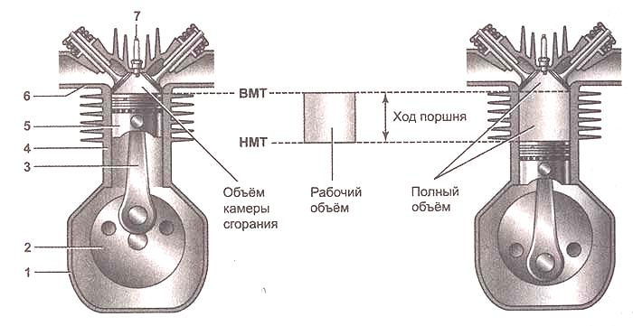
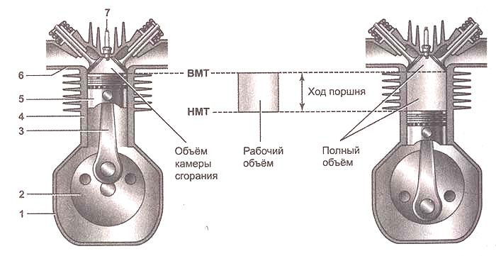
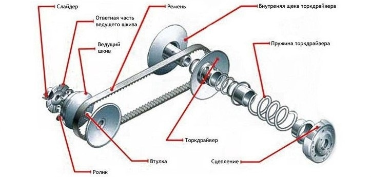
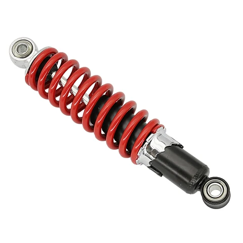

Двигатель
Двигатель - это сердце вашего скутера. Он преобразует топливо в механическую энергию, приводя в движение все остальные системы. Важно регулярно обслуживать двигатель, менять масло и фильтры, чтобы он работал эффективно и надежно.

Имея учетную запись клиента, вы можете навсегда сохранить несколько автомобилей и изменить их в любое время.
Добро пожаловать в наш раздел технических советов и руководств по скутерам и их запчастям. Здесь вы найдете всю необходимую информацию о работе основных компонентов скутера, руководства по установке, советы по настройке, видеоуроки и многое другое. Наши советы помогут вам поддерживать ваш скутер в отличном состоянии, а также правильно установить и настроить новые запчасти.
Двигатель - это сердце вашего скутера. Он преобразует топливо в механическую энергию, приводя в движение все остальные системы. Важно регулярно обслуживать двигатель, менять масло и фильтры, чтобы он работал эффективно и надежно.
Трансмиссия передает мощность от двигателя к колесам. Она включает в себя цепь, шестерни и другие элементы. Регулярная проверка и смазка трансмиссии поможет избежать износа и повреждений.
Подвеска обеспечивает плавное и стабильное движение скутера, поглощая неровности дороги. Правильная настройка и регулярное обслуживание подвески улучшат комфорт и безопасность вашего скутера.
Советы и рекомендации по выбору запчастей для вашего скутера, чтобы обеспечить его долговечность и надежность. Мы предлагаем широкий ассортимент качественных запчастей для различных моделей скутеров.
Читать статьюРуководство по уходу и техническому обслуживанию скутера, чтобы он всегда был в отличном состоянии. Используйте наши запчасти и инструменты для регулярного обслуживания вашего скутера.
Читать статью